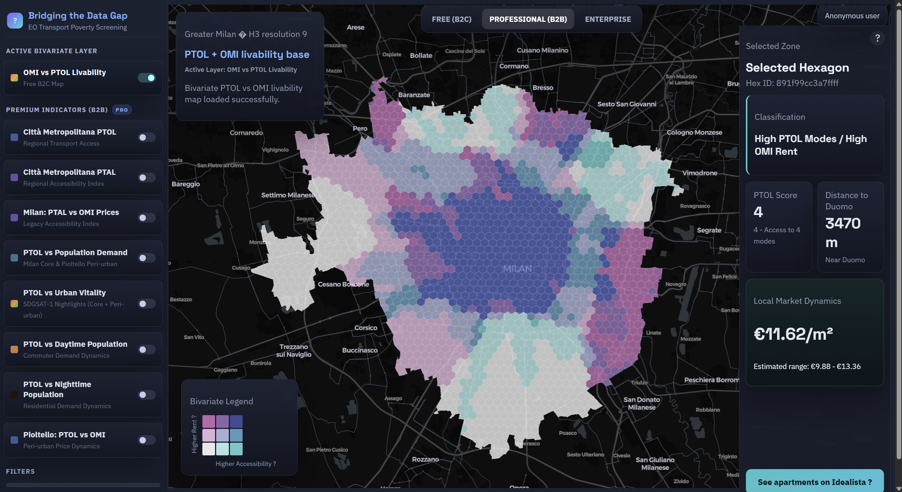
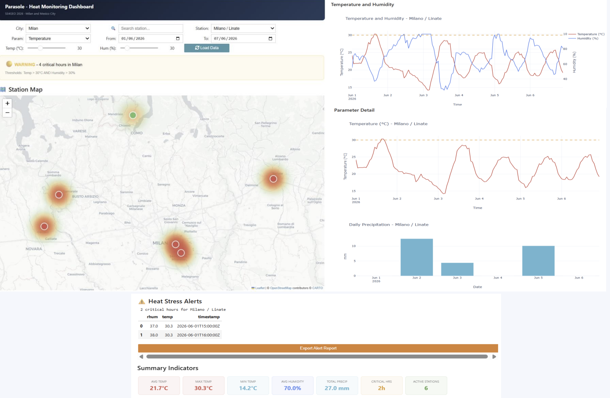
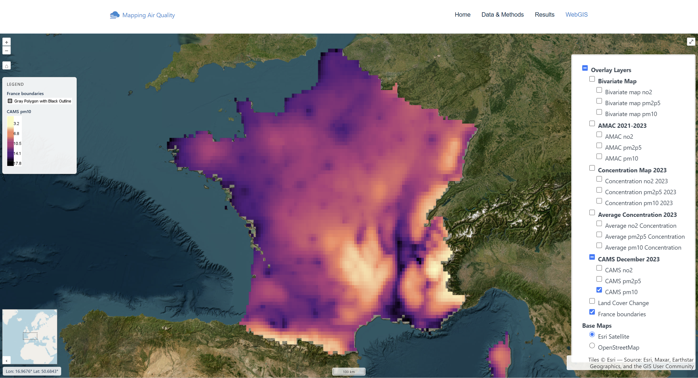
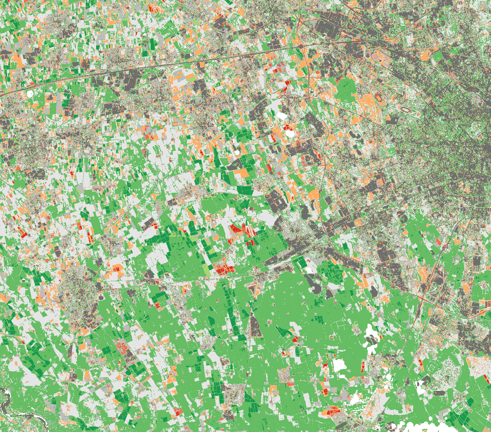
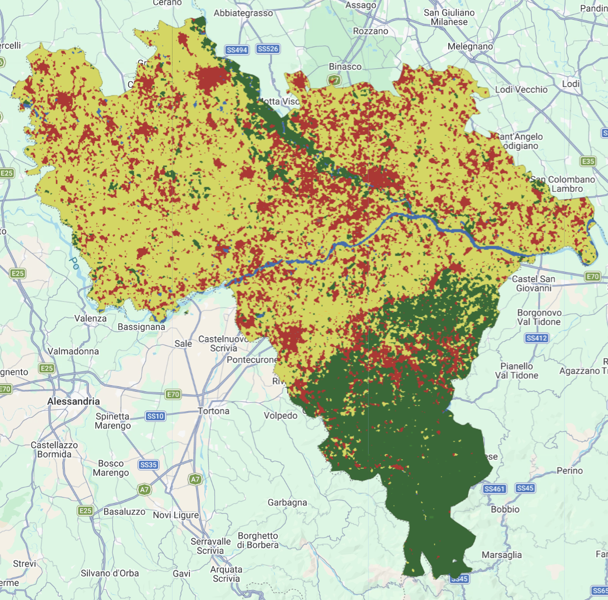
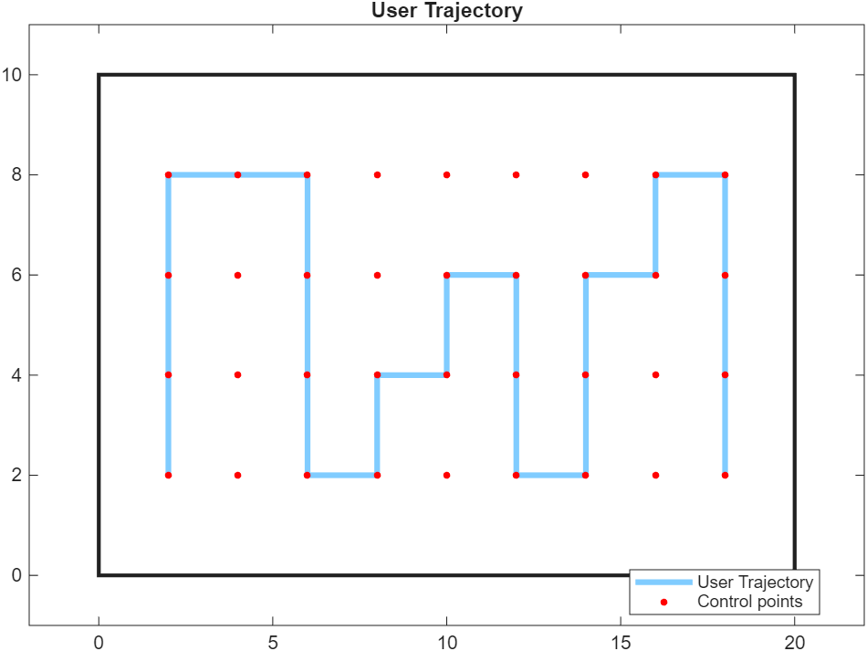
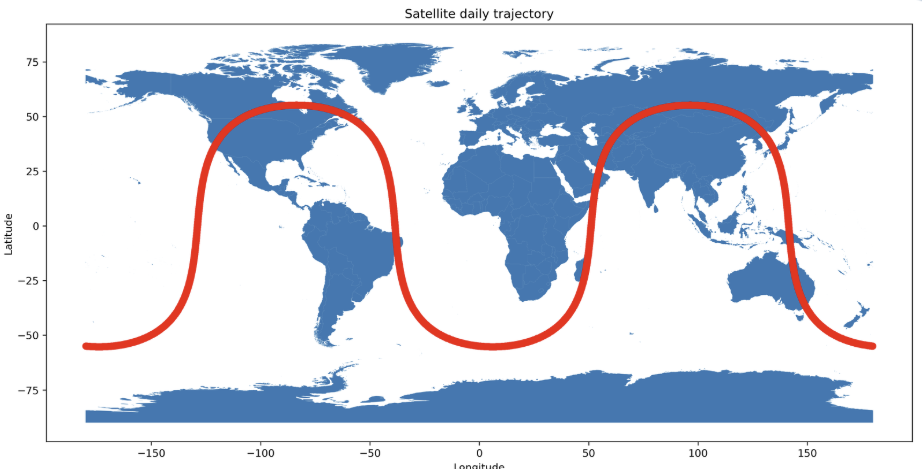
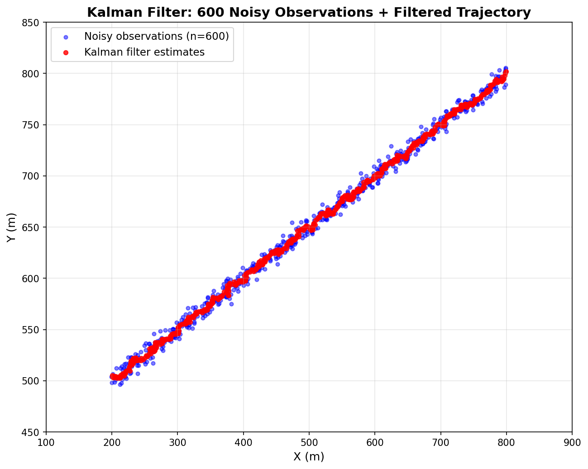

Juanita Sánchez
Geoinformatics Engineering student at Politecnico di Milano with a background in geology. Passionate about spatial data analysis, remote sensing, and building tools that make geographic information actionable.
completed
tools used
GIS · EO · Data · Development
Geoinformatics at Polimi
About Me
Where geoscience meets geoinformatics
I'm a geologist currently pursuing a Master of Science in Geoinformatics Engineering at Politecnico di Milano, within the GEO-ENV track. My academic background combines geology and geoinformatics, with a strong focus on the use of spatial data and digital technologies to understand environmental processes and support informed decision-making.
My experience and studies span Geographic Information Systems (GIS), remote sensing, geospatial data analysis, Earth Observation, spatial databases, positioning and location-based services, software engineering for geoinformatics, and machine learning. I have worked with spatial analysis, thematic cartography, watershed and land-use studies, geological and geomorphological interpretation, and landslide susceptibility assessment.
I'm particularly interested in developing geospatial solutions that transform complex spatial data into practical information for environmental monitoring, territorial planning, natural hazard assessment, and resource management. I aim to combine my geological background with advanced geoinformatics methods to address real-world environmental and spatial challenges.
GIS Analysis
Spatial analysis, geoprocessing, and cartographic visualization with QGIS and ArcGIS Pro.
Earth Observation
Sentinel-2 imagery, NDVI, hyperspectral classification, atmospheric monitoring.
Spatial Databases
PostgreSQL + PostGIS, spatial queries, GeoServer publication and WFS services.
Development
Python, Flask, Jupyter Notebooks, Leaflet.js for web mapping and data dashboards.
Education
Academic background spanning two engineering disciplines
MSc Geoinformatics Engineering (LM-35, GEO-ENV)
Politecnico di Milano, Milan, Italy. Coursework includes Geographic Information Systems (GIS), Geospatial Data Analysis, Earth Observation, Positioning and Location-Based Services, Software Engineering for Geoinformatics, Databases, Computer Security, Computer Architecture and operating systems, and Space Economy.
BSc Geology / Earth sciences
Undergraduate studies in Colombia focused on geology, with a strong emphasis on geospatial technologies, spatial data analysis, geological mapping, and the application of digital tools to Earth science problems.
Professional Experience
GIS, remote sensing, and geospatial consulting across multiple sectors
Photogrammetry and Cartography Service
Aeroestudios SAS · Remote
Updating and reprocessing of 13 images in a previously built mosaic dataset.
GIS Consultant
Aeroestudios SAS · Remote
Built and optimized orthophoto mosaic datasets in ArcGIS Pro, integrating 96 orthophotos into urban and rural mosaics. Responsible for footprint generation, seamline construction, overview management, and mosaic quality control. Published imagery services and produced technical documentation.
GIS Geologist
Gobernación de Antioquia · Medellín, Colombia
Contributed to territorial planning by creating spatial analysis models and maps integrating environmental, social, and economic data to support sustainable land-use decisions and resource allocation.
GIS Contractor
Isabel Restrepo / Mineros S.A.
Database management and spatial data administration using SQL and QGIS for the mining sector. Maintained and queried geospatial databases to support operational planning and reporting.
R&D Analyst / Specialist Engineer
Procalculo Prosis S.A. · Medellín, Colombia
Transformed spatial data into actionable information using GIS, AI, and statistical methods for mining, water, energy, and risk management. Developed geospatial predictive models for renewable energy prospecting and vulnerable area modeling using ArcGIS, QGIS, ENVI, SAM classification, and band mathematics.
Summer Research Intern
Institute for Planetary Materials · Misasa, Japan
Analyzed extraterrestrial materials using ICP-MS, SEM, EA-IRMS, Raman spectroscopy, and FTIR on carbonaceous chondrite meteorite samples. Interpreted mineral-organic matter data to understand asteroid evolution and solar system genesis.
Geologist
Gobernación de Antioquia · Medellín, Colombia
Supported cadastral updates with geographic layer editing, cartographic product verification, GDB validation, and orthophoto processing. Built the orthophotomosaic of Antioquia in ArcGIS Pro.
Research Coordinator
Universidad EAFIT · Medellín, Colombia
Coordinated a research project using Google Earth Engine and GIS for hydrological analysis and multi-temporal land use change detection.
Projects
Selected academic and applied projects in geoinformatics, spatial analysis, and software engineering
"Where to Live?" - Transport Poverty Screening Tool

Developed a Public Transport Opportunity Level (PTOL) index for Milan using OpenStreetMap data, NetworkX/Pandana graph analysis, and H3 hexagonal grids. Validated against TfL PTAL with strong correlation (r = 0.83). Designed a freemium marketplace concept combining transport quality, rental data, and apartment listings. Built an interactive HTML prototype with Leaflet.js.
Live DemoParasole - Heat Monitoring Dashboard

Group software engineering project for Milan and Mexico City. Built a client-server heat monitoring system with a station heatmap, temperature/humidity time series, daily precipitation charts, heat stress alerts, and summary indicators. Uses Meteostat API data stored in PostgreSQL/PostGIS, exposed via Flask REST API, and visualized through a Jupyter Notebook dashboard.
Mapping Air Quality in France

Analyzed NO₂, PM2.5, and PM10 concentrations across France (2021–2023) using Copernicus CAMS reanalysis data. Produced AMAC change maps, bivariate pollution–population maps, zonal statistics, and land cover change analysis (Stability Rate 94.75%). Built an interactive WebGIS with OpenLayers and a multi-page project website. Personally responsible for PM10 analysis.
Project WebsiteRandom Forest Land Cover Classification - Pavia

Supervised land cover classification of the Pavia area (Italy) using a Random Forest model applied to multispectral remote sensing imagery. Trained and validated the classifier with ground truth data, assessed accuracy through confusion matrix, overall accuracy, and kappa coefficient. Compared class separability and analyzed feature importance across spectral bands.
NDVI Vegetation Cover Change - Milan

Sentinel-2 L2A (10 m resolution) multitemporal analysis of vegetation cover change in Milan. Applied SCL cloud masking, fixed-threshold NDVI classification, and Point Sampling Tool for validation. Quantified green space dynamics across the metropolitan area using free Copernicus imagery.
Indoor Positioning via Wi-Fi Fingerprinting

Implemented a Wi-Fi fingerprinting system for indoor positioning using RSSI measurements from 10 beacons and 36 calibration points. Estimated user trajectory through a room by matching signal patterns to a radio map. Also implemented Dijkstra's shortest path algorithm for optimal flight routing through a European city network.
GPS Orbit Computation & Static PPP


Geodetic computation labs covering coordinate frame transformations with covariance propagation (ORS → ITRF), Keplerian orbital parameters, satellite ground track computation, and clock offset modeling. Implemented a Kalman filter for trajectory smoothing from noisy observations. Static daily Precise Point Positioning of Milan's MIL3 GNSS station using CSRS-PPP.
PostGIS Spatial Queries & GeoServer Publication
Built and queried spatial databases using PostgreSQL/PostGIS with Milan-area datasets. Completed spatial queries for proximity analysis, overlay operations, and feature extraction. Published layers via GeoServer as WFS services and visualized results in QGIS.
Technical Skills
Tools and technologies I work with across GIS, development, and geoscience
GIS & Remote Sensing
- QGIS
- ArcGIS Pro
- GeoServer
- OpenLayers
- Leaflet.js
- PostGIS
- Sentinel-2
- Copernicus CAMS
- CORINE Land Cover
- NDVI Analysis
- Random Forest Classification
Programming & Development
- Python
- Pandas
- scikit-learn
- Flask
- Jupyter Notebooks
- SQL / PostgreSQL
- HTML / CSS / JavaScript
- MATLAB
- Git / GitHub
Geodesy & Positioning
- GNSS
- Precise Point Positioning
- ITRF Transformations
- Coordinate Reference Systems
- Wi-Fi Fingerprinting
- Kalman Filtering
- CSRS-PPP
Data & Analysis
- Raster Algebra
- Zonal Statistics
- Network Analysis (Pandana)
- H3 Hexagonal Grids
- Bivariate Mapping
- GTFS / NeTEx
Languages
- Spanish (native)
- English (proficient)
- Italian (Intermediate level)
Let's Connect
I'm open to discussing geospatial projects, research collaborations, or internship opportunities in GIS, Earth Observation, and spatial data engineering.
Connect on LinkedIn